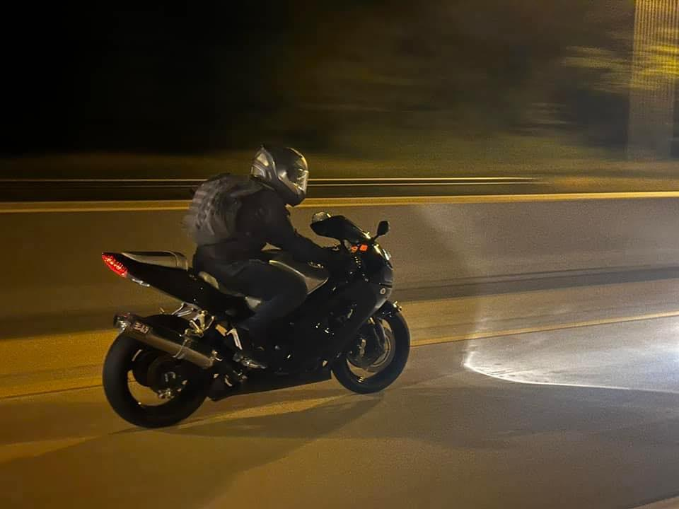

Jontrel Smith was born on July 12, in the vibrant city of Chicago, Illinois. Despite his deep roots in Chicago, a city that has shaped much of who he is today, Jontrel dreams of living somewhere free from the harsh winters that the Midwest is known for. After years of enduring brutal Chicago winters, he longs for a place where he can enjoy his hobbies especially riding his motorcycle year-round without the interruption of snow and cold.
A warmer climate would allow Jontrel to fully embrace his passions, whether it’s taking his dream bike out for a spin or simply enjoying the outdoors without the need for heavy winter gear. In essence, Jontrel Smith is driven by a love for speed, mechanics, and the pursuit of excellence. Whether he’s riding a motorcycle, fine-tuning an engine, or strategizing in a video game, Jontrel approaches everything he does with a passion for precision and a thirst for adventure. As he looks to the future, Jontrel remains committed to his passions, always seeking new challenges and opportunities to push the boundaries of what’s possible.